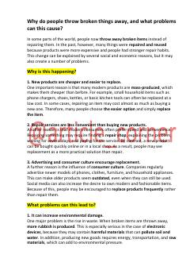

WDNima uchun odamlar buzilgan buyumlarni ta'mirlash o'rniga yangisini sotib olishni afzal ko'rishadi?
Ushbu matn nima uchun zamonaviy jamiyatda odamlar buzilgan narsalarni ta'mirlash o'rniga ularni tashlab yuborishni afzal ko'rishlarini tahlil qiladi. Unda iste'molchilik madaniyati, iqtisodiy omillar va atrof-muhitga yetkaziladigan zarar kabi masalalar muhokama qilinib, ta'mirlash ko'nikmalarining ahamiyati yoritiladi.